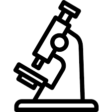

Interdisciplinary scientist spanning from chemistry to virology, cell biology, regenerative medicine, optics, photonics, microfluidics, image analysis, machine learning, software development. Currently working as a machine learning researcher at Pictor Labs to virtually stain histopathology slides using deep learning.
My research interests:
1. Unraveling the complexity of cell morphology using self-supervised deep learning.
2. High-speed imaging optics. e.g. imaging flow cytometry.
3. Unveiling cell biology, revolutionizing clinical application with above technologies.

The University of Tokyo, Tokyo, Japan
2014-2018
Dissertation: Label-free detection of drug responses of cancer cells by machine-learning-assisted high-throughput bright-field imaging
The Institute of Medical Science, The University of Tokyo, Tokyo, Japan
2011-2013
Dissertation: Development of a bivalent live vaccine against influenza and parainfluenza virus
Tokyo University of Science, Tokyo, Japan
2006-2011
Thesis: Development of a cathode in a laboratory setup to evaluate interstellar molecules
Development of regenerative organ model for liver transplantation
Supervised by: Dr. Hiroshi Yagi
Assisting Prof. Goda to start up his new lab in all aspects including laboratory & office design/renovation, writing grant proposals and stuff training.